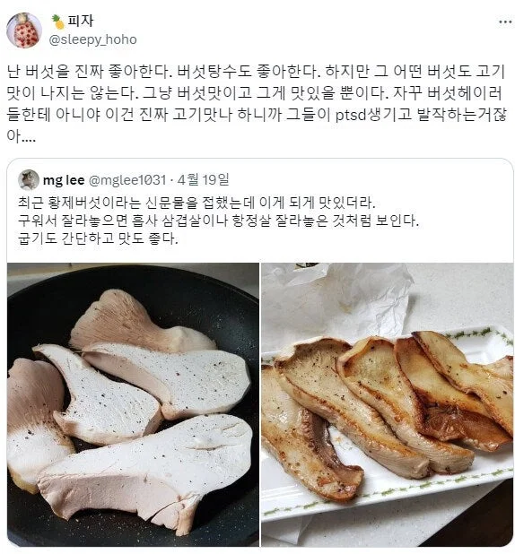

능이 이름도 생소할때 누가 한 바가지 줘서 엄니가 데쳐 줬는데 개존맛 그자체
능이 백숙 먹어도 한 젓가락도 안 되게 주고 시발거
그리고 숯불에 새송이 통으로 구워서 먹으니
좆송이에서 향이 그렇게 풍부한지 몰랐음
버섯존중한다 마트서 풀떼기비싸면 버섯코너 기웃거려야됨
그냥 버섯은 존나 맛있음... 기름에 살짝 볶거나 구우면 걍 술술 들어감 표고 새송이 팽이 뭐 다 좋음...
송이버섯 구웠을때 나오는 채즙이 고기향 나서 고기맛이라고 표현함 ㅋㅋㅋㅋㅋ
햄버거에 버섯들어가면 좋아하는사람 ? 나
사람들 미각은 생각보다 뛰어나지 않다
걍 버섯 맛은 모르겠고 물컹거리는 그 식감이 최악이라서 제일 싫어하는 채소중 하나